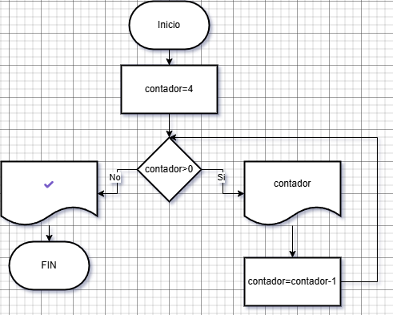

./Introduccion_a_los_Ciclos
🤔 ¿Qué es un Ciclo? La Magia de Repetir
En programación, un ciclo (o bucle) es una estructura que nos permite repetir un conjunto de instrucciones varias veces, sin tener que escribirlas una y otra vez.
Imagina que tuvieras que darle 5 vueltas a la cancha. No piensas "correr paso 1, correr paso 2, ... , correr paso 5000". Simplemente piensas: "Repetir 'correr una vuelta' hasta completar 5 vueltas". ¡Eso es un ciclo!
Los ciclos son fundamentales porque nos ahorran tiempo, reducen la cantidad de código y permiten realizar tareas que serían imposibles manualmente (¡imagina repetir algo un millón de veces!).
🧱 Recordando MakeCode: Bloques que Repiten
Si has trabajado con Micro:bit usando MakeCode, probablemente ya has usado ciclos sin darte cuenta. Bloques como `repetir [4] veces` o `mientras [condición] ejecutar` son ciclos.
El bloque `mientras` de MakeCode es el primo hermano del ciclo `while` en Python. Ambos funcionan bajo la misma lógica: ejecutar un bloque de acciones repetidamente mientras una condición específica se mantenga verdadera.
La diferencia principal está en cómo lo escribimos: MakeCode usa bloques visuales, mientras que Python usa texto (código).
📊 El Diagrama de Flujo: Dibujando la Repetición
Una forma visual de entender cómo funciona un ciclo `while` es mediante un diagrama de flujo. Utiliza símbolos estándar:
- Rombo (Decisión): Representa la condición (`¿condición es Verdadera?`). Tiene dos salidas: 'Sí' y 'No'.
- Rectángulo (Proceso): Representa las acciones o instrucciones que se ejecutan dentro del ciclo.
- Flechas: Indican el flujo o la secuencia de ejecución.
Un diagrama de flujo típico para un ciclo `while` se vería así:
Observa cómo si la condición es 'Sí' (Verdadera), se ejecutan las acciones y se vuelve a comprobar la condición. Si la condición es 'No' (Falsa), el flujo continúa fuera del ciclo.
🐍 El Ciclo `while` en Python: La Estructura Detallada
Ahora sí, veamos cómo se escribe un `while` en Python. ¡Presta atención a cada parte!
Desglose de la Estructura:
- `while condicion:`: Empieza con la palabra `while`, seguida de la `condicion` que se evaluará (ej: contador>0). La condición debe resultar en `True` para que el ciclo se ejecute, o `False` para que termine o no empiece. Termina siempre con dos puntos `:`.
- Bloque Indentado: Las líneas de código que quieres repetir deben tener una indentación (normalmente 2 o 4 espacios, puedes usar la tecla TAB) respecto a la línea del `while`. Python usa esta indentación para saber qué código pertenece al ciclo.
- Actualización (¡CRÍTICA!): Dentro del bloque indentado, tiene que haber al menos una instrucción que modifique alguna variable involucrada en la `condicion`. En el ejemplo, `contador = contador - 1` asegura que `contador` disminuya y eventualmente `contador >0` se vuelva `False`. Si olvidas esto, ¡crearás un ciclo infinito! ⚠️
Entender bien estas tres partes es clave para usar los ciclos `while` correctamente.
🔢 Ejemplo 1: Contando hasta 5 (Repaso)
Recordemos el ejemplo clásico y apliquemos lo aprendido:
- Ejecuta este código.
- Modifica: Cambia la inicialización (`contador = 0`) y la condición para imprimir del 0 al 4.
- Experimenta: ¿Qué pasa si la condición inicial es `contador > 5`? ¿Entra al ciclo alguna vez?
⚠️ ¡Peligro! Ciclos Infinitos
Como vimos, si la condición de tu `while` NUNCA se vuelve `False` porque olvidas la actualización o por un error lógico, tendrás un ciclo infinito.
# ¡Cuidado! Ciclo infinito si no hay actualización
numero = 10
while numero > 0:
print("El número sigue siendo positivo...")
# Falta algo como: numero = numero-1
Recuerda `Ctrl + C` para detenerlo y ¡siempre revisa la lógica de salida de tus ciclos!
⌨️ Ejemplo 2: Validando la entrada
Usar `while` para asegurar datos válidos es muy útil.
- Ejecuta y prueba ingresando números fuera de rango, letras, etc.
- Cambia el rango para que pida un número entre 50 y 100.
🚩 Ejemplo 3: Usando Banderas (Flags)
Una variable `True`/`False` (bandera) puede controlar el ciclo.
- Ejecuta el programa y prueba a escribir diferentes cosas
- Cambia la palabra clave para salir (por ejemplo, a "fin").
- Haz que el programa ignore si el usuario solo presiona Enter (entrada vacía). Pista: `if texto_usuario == "":` Pista 2, usa el comando continue.
🎯 ¡A Practicar se Dijo!
¡Has recorrido un largo camino con los ciclos `while`! Lo esencial:
- Repiten mientras condición sea `True`.
- Necesitan condición, bloque indentado y salida
La clave es PRACTICAR. ¡Modifica, crea, experimenta!
Tarea para practicar:
- Imprime números del 10 al 1 hacia atrás usando `while`.
- Pide al usuario una contraseña. Mientras no sea "secreto123", sigue pidiéndola.
- Simula tirar un dado (número aleatorio 1-6) hasta que salga un 6. Cuenta cuántos tiros necesitaste. (Usa `import random`).
¡No te rindas y sigue codificando!